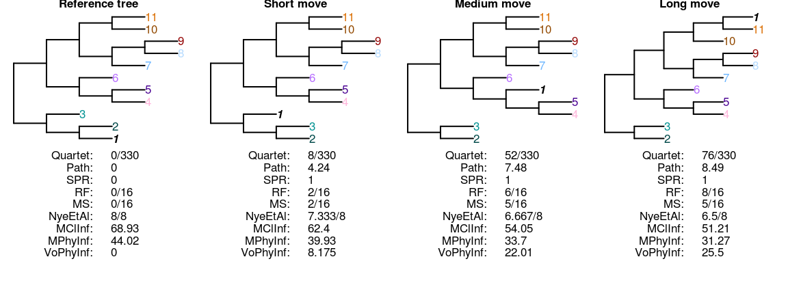
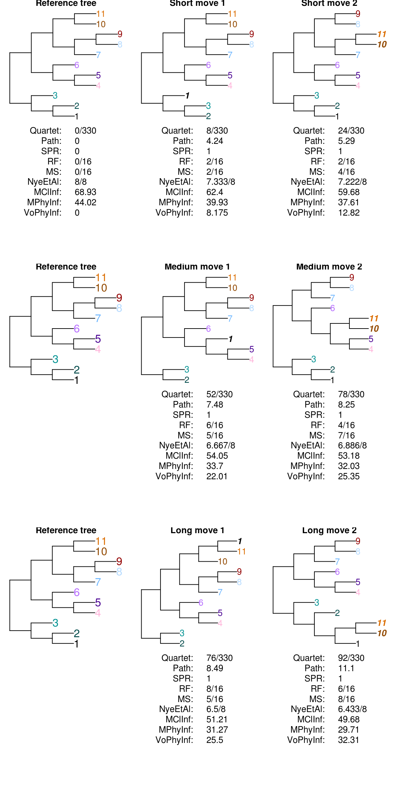
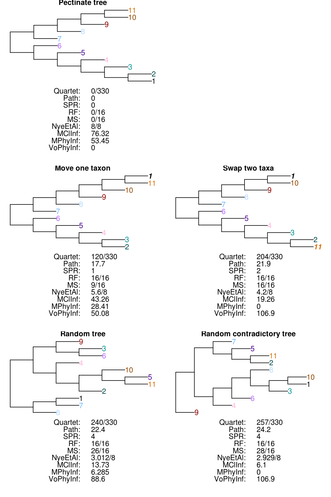
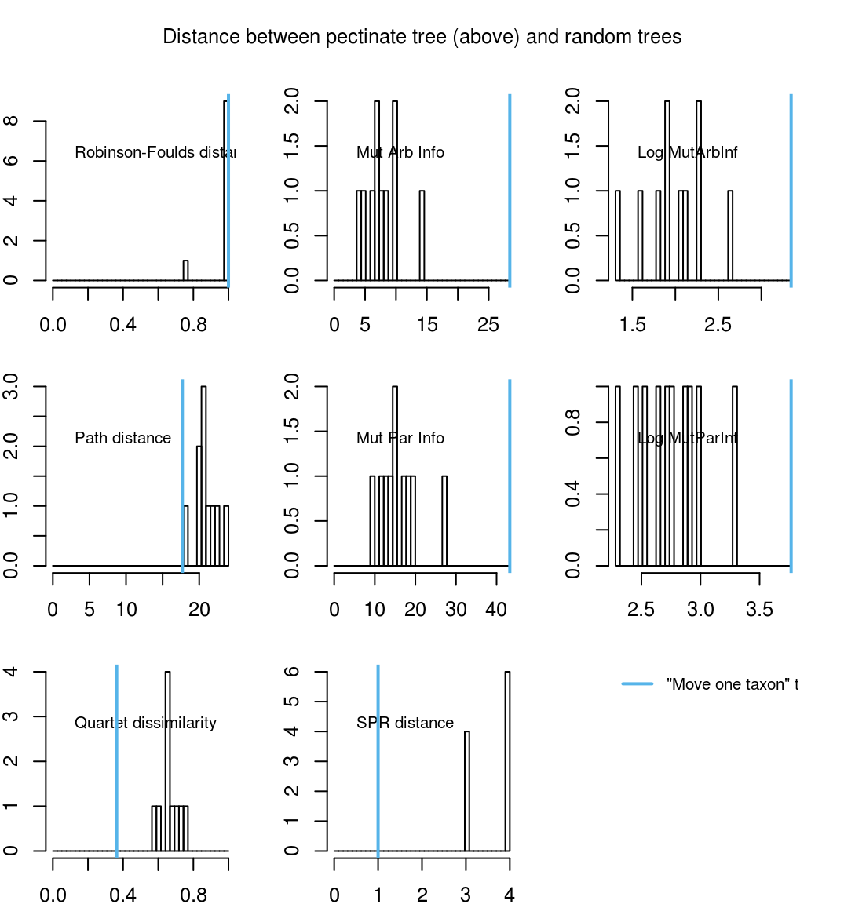
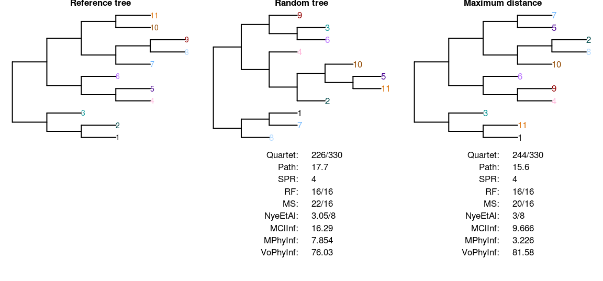
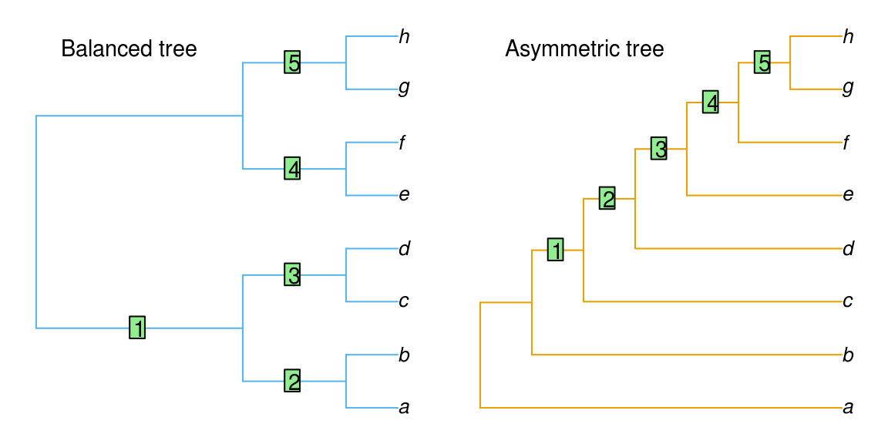
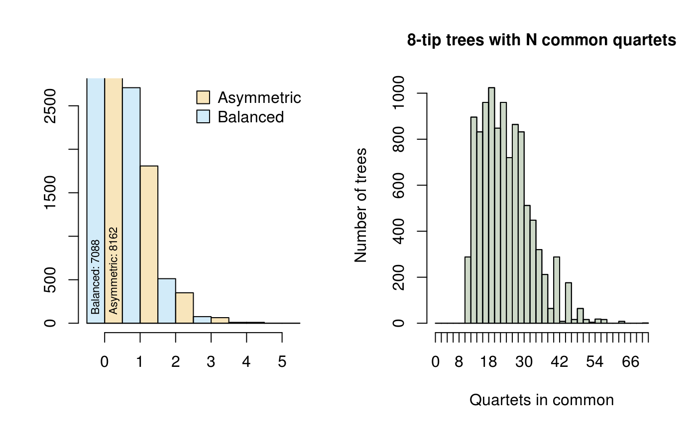

vignettes/Tree-distance-metric-evaluation.Rmd
Tree-distance-metric-evaluation.RmdTree distance metrics are introduced in an earlier vignette.
##
## Attaching package: 'Quartet'## The following object is masked from 'package:TreeDist':
##
## RobinsonFouldsThe most fundamental desideratum for a tree distance metric is that it assigns higher distance scores (or lower similarity scores) to trees that are more different. A consideration of problematic cases shows that some metrics do not consistently meet this fundamental criterion.
If trees differ only in the location of a single taxon (see taxon 1 in the trees below), then the distance between two trees should correspond to the distance that this taxon has been moved.

The subtree pruning and regrafting (SPR) distance does not distinguish between these trees, as they differ only in the placement of a single tip. The Robinson-Foulds, path difference and quartet metrics, in contrast, recognize trees in which this tip has been moved further as more distant from the starting tree.
| Measure | Quartet | Path | SPR | RF | MS | Nye et al. | MClInf | MArInf | VoArInf |
|---|---|---|---|---|---|---|---|---|---|
| Outcome | Pass | Pass | FAIL | FAIL | Pass | Pass | Pass | Pass | Pass |
Intuitively, moving a pair of tips on a tree should lead to higher tree distances than moving a single tip. In the case of a short move, the RF distance does not differ whether one or two tips are moved. For larger moves, however, the RF distance is less when two tips are moved than when a single tip is moved. The path and quartet metrics perform as expected.
The trees below differ from a reference tree in the position of a single tip (tip 1), or a pair of tips (tips 10 and 11), which have been moved a short, medium or long distance from their original positions.

| Measure | Quartet | Path | SPR | RF | MS | Nye et al. | MClInf | MArInf | VoArInf |
|---|---|---|---|---|---|---|---|---|---|
| Short move | Pass | Pass | FAIL | FAIL | Pass | Pass | Pass | Pass | Pass |
| Medium move | Pass | Pass | FAIL | FAIL | FAIL | FAIL | Pass | Pass | Pass |
| Long move | Pass | Pass | FAIL | FAIL | FAIL | FAIL | Pass | Pass | Pass |
A distance metric should distinguish slightly-perturbed trees from random trees and those that are more different from the starting tree than expected by chance.
The Robinson-Foulds metric can reach its maximum value when a single taxon is relocated from the most basal to the most derived point of a pectinate tree, representing a maximal value despite retaining relationship information about all other taxa.

| Criterion | Quartet | Path | SPR | RF | MS | Nye et al. | MClInf | MArInf | VoArInf |
|---|---|---|---|---|---|---|---|---|---|
| Swap 2 > Move 1 | Pass | Pass | Pass | FAIL | FAIL | Pass | Pass | Pass | Pass |
| Random > Swap 2 | Pass | Pass | Pass | FAIL | Pass | Pass | Pass | FAIL | FAIL |
| Contra > Random | Pass | Pass | FAIL | FAIL | Pass | Pass | Pass | Pass | Pass |
A notable proportion of random trees receive a lower RF distance from the original tree, even though they do not show any structural similarity. This is not the case with the quartet symmetric difference.

An advantage of the quartet symmetric distance is that the normalized metric of a random tree is \(\frac{2}{3}\) (Day, 1986; Steel & Penny, 1993). As such, trees that are more different than expected by chance can be readily recognized, as their distance metric will be greater than \(\frac{220}{330}\). The ‘maximum distance’ tree depicted below was identified using the R package TreeSearch (Smith, 2018), using the quartet difference from the reference tree as an optimality criterion.

A further shortcoming of the RF metric is that not all partitions represent an equivalent amount of information. A partition distance of 1 could mean that two trees differ in an uninformative partition, or a more informative partition. All quartets, in contrast, are equally informative.
Consider a balanced and an unbalanced eight-taxon tree:

Each tree divides the eight taxa into five bipartition splits.
The information content (Shannon entropy) of a split can be calculated based on what proportion of eight-tip trees contain the split in question. This is a function of the evenness of the split:
| Matching trees | p(Match in random tree) | Information content / bits | |
|---|---|---|---|
| Partition size: 2:6 | 945 | 0.0909 | 3.459432 |
| Partition size: 3:5 | 315 | 0.0303 | 5.044394 |
| Partition size: 4:4 | 225 | 0.0216 | 5.529821 |
In the first tree, split 1 is even, dividing four taxa from four others (4:4); splits 2–5 are maximally uneven (2:6). The total information content of these five splits is 19.37, whereas that of the five splits in the second tree, of sizes 2:6, 3:5, 4:4, 3:5 and 2:6, is 22.54. Put another way, a random tree will on average share more partitions with the balanced tree (whose partitions are predominantly uneven and thus likely to be matched) than the asymmetric tree (which contains more even partitions that are less likely to occur in a random tree).
Of the 10 395 eight-tip trees, many more bear at least one partition in common with a balanced tree than with an asymmetric tree, whereas the distribution of quartets is identical:

Whereas the path distance and SPR metrics are only defined on bifurcating trees, symmetric difference approaches can be applied to trees that contain polytomies – i.e. not every node is resolved as bifurcating.
Quartet dissimilarity is the only available metric of tree distance that fulfils all of the following desiderata:
The primary issue with the Robinson-Foulds distance is its conservative pairing of clades: a grouping is either identical in both trees, or is treated as different.
This makes no account for the possibility that one tree contains a grouping that is similar (though not quite identical) to a grouping in another.
In order to incorporate some measure of similar-but-not-quite-identical clades, it is necessary to construct an optimal matching that pairs each clade in each tree with either a suitable clade in the other, or with no clade at all.
Various approaches to this problem have been proposed; these typically search for a matching that minimises the total dissimilarity summed for all pairings. Approaches differ in how they penalize differences between paired groups. Bogdanowicz and Giaro (2012, 2013, 2017) calculate the size of the largest bipartition that is consistent with both input groups; Nye et al. (2006) normalize this number using the Jaccard index; Böcker et al. (2013) raise this value to an arbitrary exponent, and add a constraint that prohibits pairings that comprise contradictory groups.
These approaches represent a refinement of the Robinson-Foulds metric, circumventing many of the issues raised above. They are, however, more computationally expensive, and lack an objective measure of clade similarity. I am not presently aware of an R implementation of any of these measures, though a related metric is planned for a future version of this package.
Bogdanowicz, D., & Giaro, K. (2012). Matching split distance for unrooted binary phylogenetic trees. IEEE/ACM Transactions on Computational Biology and Bioinformatics, 9(1), 150–160. doi: 10.1109/TCBB.2011.48
Bogdanowicz, D., & Giaro, K. (2013). On a matching distance between rooted phylogenetic trees. International Journal of Applied Mathematics and Computer Science, 23(3), 669–684. doi: 10.2478/amcs-2013-0050
Bogdanowicz, D., & Giaro, K. (2017). Comparing phylogenetic trees by matching nodes using the transfer distance between partitions. Journal of Computational Biology, 24(5), 422–435. doi: 10.1089/cmb.2016.0204
Böcker, S., Canzar, S., & Klau, G. W. (2013). The generalized Robinson-Foulds metric. In A. Darling & J. Stoye (Eds.), Algorithms in bioinformatics. WABI 2013. Lecture notes in computer science, vol 8126 (pp. 156–169). doi: 10.1007/978-3-642-40453-5_13
Day, W. H. (1986). Analysis of quartet dissimilarity measures between undirected phylogenetic trees. Systematic Biology, 35(3), 325–333. doi: 10.1093/sysbio/35.3.325
Nye, T. M. W., Liò, P., & Gilks, W. R. (2006). A novel algorithm and web-based tool for comparing two alternative phylogenetic trees. Bioinformatics, 22(1), 117–119. doi: 10.1093/bioinformatics/bti720
Smith, M. R. (2018). TreeSearch: Phylogenetic Tree Search Using Custom Optimality Criteria. doi: 10.5281/zenodo.1042590
Steel, M. A., & Penny, D. (1993). Distributions of tree comparison metrics—some new results. Systematic Biology, 42(2), 126–141. doi: 10.1093/sysbio/42.2.126